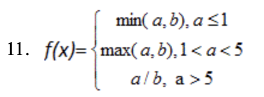
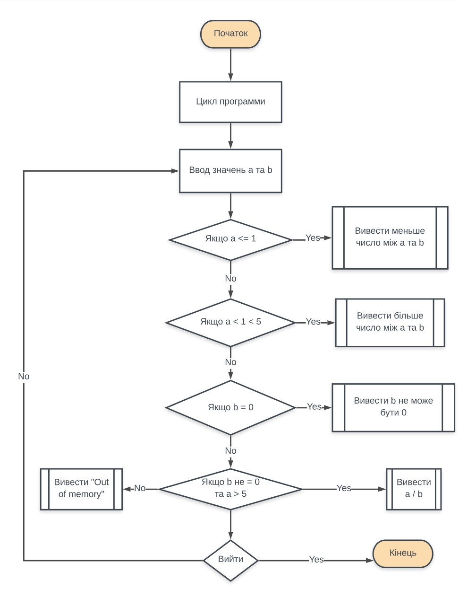
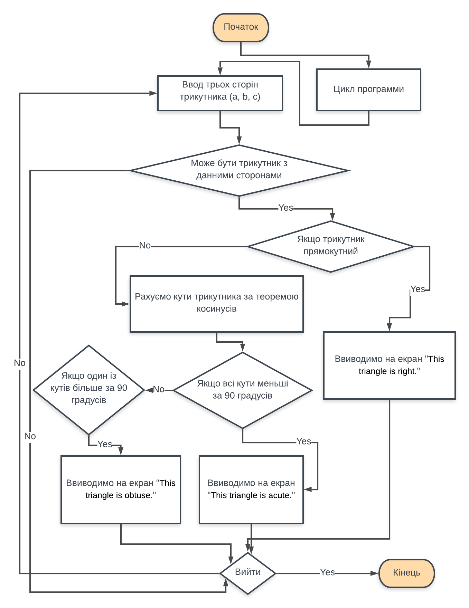

Студент: Крисевич Данило
Група: ІПЗ-12
З навчальної дисципліни: основи программування
Мета роботи:
Умови задач:
Теоретичні відомості:
Умова:
Блоксхема:
Код программи:
#include <iostream>
using namespace std;
int main() {
bool quit = false;
while (!quit)
{
double a, b;
cout << "Enter a and b: " << endl;
cin >> a >> b;
if (a <= 1) cout << "Result: " << min(a, b) << endl;
else if (1 < a && a < 5) cout << "Result: " << max(a, b) << endl;
else if (b == 0) cout << "b can't be 0." << endl;
else if (b != 0 && a > 5) cout << "Result: " << a / b << endl;
else cout << "Out of memory" << endl;
string input;
cout << "If you want quit print 'q'. To continue print anything else: ";
cin >> input;
if (input == "q") {
quit = true;
}
}
cout << "Goodbye!";
}
Коментарі:
Для більш зручної взаємодії з программою я додав цикл, що повторює функціонал программи рівно стільки раз - скільки хоче того користувач, таким чином я ініцилізував тип данних string з індефікаторм input для зчитування данних, що ввів користувач.
Також для більш стабільної роботи программи я ввів змінні з типом данних double.
Ще одним доповнення стало умова, що не входить до задачі, аби проінформувати користовуча про некорекність введених данних.
Результат:

Умова:
Перевірити, чи існує трикутник із введеними з клавіатури значенням сторін a, b, c. Якщо так, то визначити тип трикутника: a) гострокутний; b) прямокутний; c) тупокутний.Блоксхема:
Код программи:
#include <iostream>
#include <math.h>
using namespace std;
double getPowSum(int a, int b, int c)
{
return acos((pow(a, 2) + pow(b, 2) - pow(c, 2)) / (2 * a * b)) * 180 / M_PI;
}
double *getDegrees(int a, int b, int c)
{
static double degrees[3];
degrees[0] = getPowSum(a, b, c);
degrees[1] = getPowSum(b, c, a);
degrees[2] = getPowSum(a, c, b);
return degrees;
}
int main()
{
bool quit = false;
while (!quit)
{
cout << "Enter 3 sides of triange trough space: ";
int a, b, c;
cin >> a >> b >> c;
if (a + b > c && a + c > b && b + c > a)
{
if ((pow(a, 2) == pow(b, 2) + pow(c, 2)) || (pow(b, 2) == pow(a, 2) + pow(c, 2)) || (pow(c, 2) == pow(b, 2) + pow(a, 2)))
{
cout << "This triangle is right." << endl;
}
else
{
double *results = getDegrees(a, b, c);
if (results[0] < 90 && results[1] < 90 && results[2] < 90)
{
cout << "This triangle is acute" << endl;
}
else if (results[0] > 90 || results[1] > 90 || results[2] > 90)
{
cout << "This triangle is obtuse" << endl;
}
}
}
else
{
cout << "This triangle doesn't exist." << endl;
}
string input;
cout << "If you want quit print 'q'. To continue print anything: ";
cin >> input;
if (input == "q")
{
quit = true;
}
}
cout << "Goodbye!" << endl;
}
Коментарі:
Для більш зручної взаємодії з программою я додав цикл, що повторює функціонал программи рівно стільки раз - скільки хоче того користувач, таким чином я ініцилізував тип данних string з індефікаторм input для зчитування данних, що ввів користувач.
Також для більш стабільної роботи программи я ввів змінні з типом данних double.
Додатково для зручності було створенно 2 функції, окрім main
Результат:

Аналіз:
Висновки